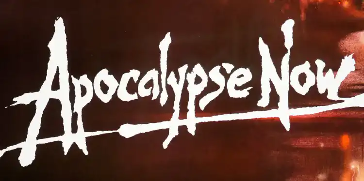

Apocalypse NOW
Apocalypse Now : Une Odyssée Cinématographique au Cœur de l'Horreur de la Guerre
Réalisé par Francis Ford Coppola en 1979, "Apocalypse Now" transcende le genre de guerre pour offrir une méditation profonde sur la condition humaine en temps de conflit.
La réplique
L'Odeur du napalm : entre réplique célèbre et réalité de la guerre

Francis Ford Coppola
Le Visionnaire d' "Apocalypse Now"
Voir L’articleContexte Historique
Le film se déroule pendant la Guerre du Vietnam, un conflit brutal qui a marqué l'histoire contemporaine. Coppola utilise ce contexte pour explorer des thèmes universels tels que la folie, la morale et la désolation humaine.
La Quête du Capitaine Willard
L'histoire suit le Capitaine Willard, chargé de traquer et d'assassiner le Colonel Kurtz, autrefois un brillant officier désormais plongé dans la folie. Ce voyage devient une descente dans les ténèbres, une exploration des limites entre civilisation et barbarie.
La Guerre comme Métaphore
Coppola utilise habilement la guerre comme métaphore des démons intérieurs qui hantent l'humanité. Les atrocités de la guerre révèlent les pulsions les plus sombres de l'âme humaine. Le napalm enflammé, les explosions assourdissantes et les visages émaciés des soldats deviennent des symboles de la folie collective qui peut surgir en temps de conflit.
Réalisation Cinématographique
Coppola adopte une approche visuelle et auditive audacieuse. La séquence d'ouverture avec les hélicoptères volant en formation sur la musique de "The End" des Doors est devenue légendaire. L'utilisation du son est tout aussi cruciale, avec une bande sonore qui plonge dans la psyché tourmentée des personnages.
La Performance Mémorable de Marlon Brando
Marlon Brando incarne le Colonel Kurtz avec une intensité inoubliable. Son interprétation est empreinte de mystère, de folie et de profondeur, ajoutant une dimension supplémentaire à l'exploration de la psyché humaine en temps de guerre.
Héritage Durable
"Apocalypse Now" reste une référence essentielle dans le cinéma, influençant les cinéastes et captivant les publics du monde entier. Il continue de susciter des débats et d'inspirer de nouvelles générations d'artistes et d'amateurs de cinéma.
Impact Culturel et Héritage
L'influence d'"Apocalypse Now" dépasse le monde du cinéma. Ses thèmes universels ont inspiré des discussions philosophiques sur la nature humaine et la folie qui peut surgir en temps de guerre. Le film a également engendré des hommages, des parodies et des références dans la culture populaire, attestant de son statut emblématique.